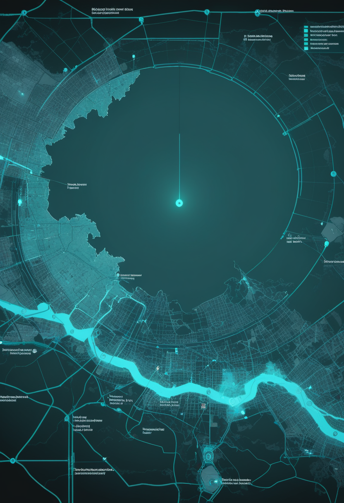
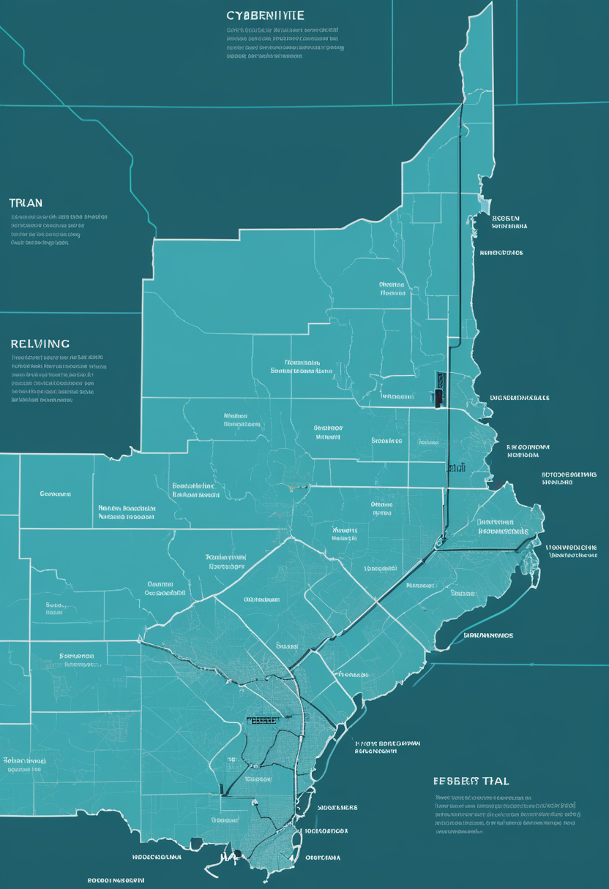
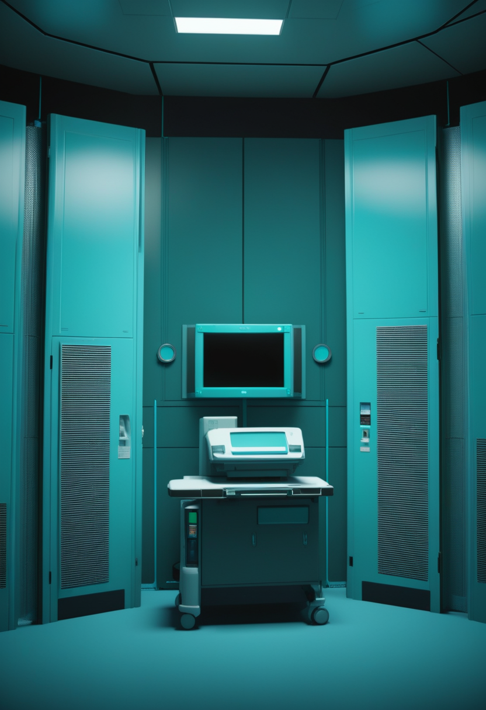
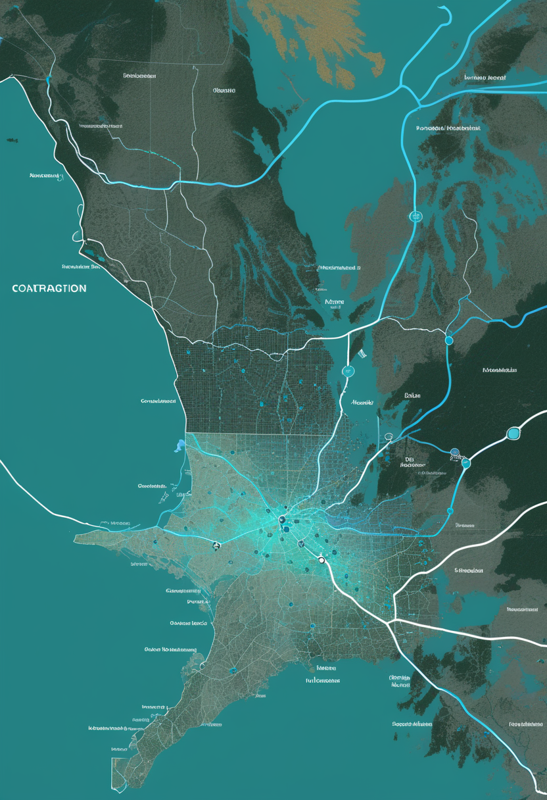
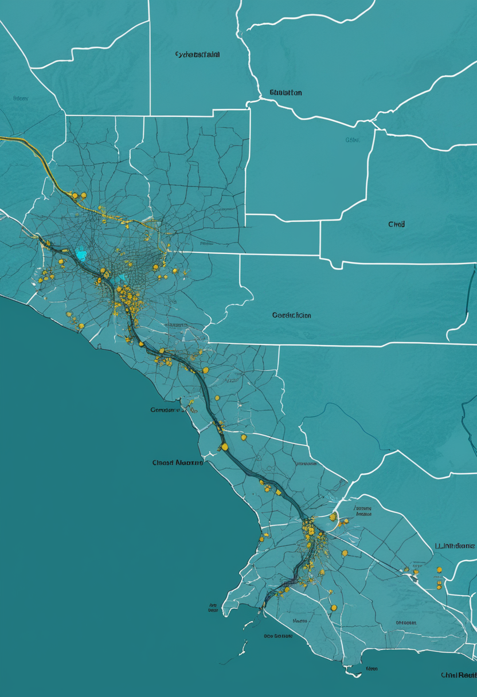
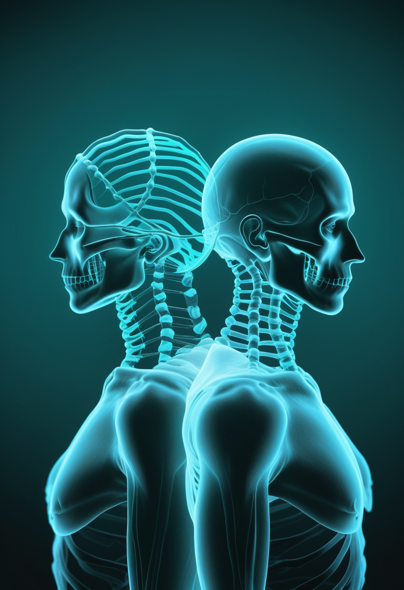

火曜日の便り。ECDCが8月24日に更新した集計で、コンゴ民主共和国の確定エボラは5,514例・死者2,642人に達した(8月22日時点、3日間で224例・126人の急増)。北キブ州の致死率は約69%とイトゥリ州の約45%を大きく上回る。Africa CDCの緊急対応部門トップは、流行がパンデミック級危機の特徴の複数を示していると述べ、事務局長Kaseya氏はSky Newsに「パニック状態」と語った ― 原因のBundibugyo型エボラには、いまも承認済みワクチンがない。命の章では、アピテグロマブがEU申請(Catalent Indiana施設分)を8月20日付で取り下げ代替施設で再申請する一方、日本ではPMDAとの合意により年末までにJNDA申請へ進むこと、英国オックスフォードが75万人規模の新生児スクリーニング実行可能性研究を8月に開始したことを伝える。自由の章では、大阪大学発スタートアップJiMEDがALS患者向け侵襲型BMIの治験届をPMDAに提出したこと、Yale大学が非侵襲的な脳の「地図」だけでアバターを操作する手法を報告したこと、北京天壇病院が国産侵襲型BCI「NEO」の多施設治験に着手したことが並んだ。基盤の章では、エボラの急増に加え、西・中央アフリカのコレラで子どもの被害が際立っている実態(中央アフリカ共和国で10歳未満が44%)が見えた。畏敬の章では、嫦娥7号が2026年内の打ち上げを断念し新日程は未定となったこと、JAXAが火星衛星探査機MMXの打ち上げを10月20日に定めたこと、JWSTが一つの銀河に3つの超巨大ブラックホールを初めて発見したことを伝える。そして美の章では、現生人類のDNAに眠る二つの「幽霊祖先」の痕跡、ネアンデルタール人由来の筋肉遺伝子、そしてAIが死者を同意なく「蘇らせる」グリーフテック産業への懸念が、遠い過去と近い未来を同じ日に並べた。

8/24号の続報 ― ECDCが8月24日に更新した最新集計で、コンゴ民主共和国の確定エボラは5,514例、死者2,642人に達した(データは8月22日時点)。前号(8月20日時点、5,290例・2,516人)からの3日間で確定224例・死者126人の急増となり、「週末で止まった時計」は動き出した。北キブ州は714例に対し490人が死亡し、致死率は約69%とイトゥリ州(約45%)を依然として大きく上回る。数字の増加と並行して、危機の性格そのものが変わりつつある。Africa CDCの緊急対応部門トップYap Boum氏は8月20日、Bloombergに対し、この流行がパンデミック級の危機に格上げされる際に考慮される特徴の複数を示していると述べた ― 重症度、複雑な感染経路、保健システムへの打撃である。正式な格上げの判断はWHOに委ねられるとして一線は引いたが、Africa CDC事務局長Jean Kaseya氏はSky Newsに「パニック状態にある」と語った。今回の流行の原因であるBundibugyo型エボラには、承認済みのワクチンが存在しない ― 8月20日に放出された7万回分のErveboはZaire型向けで、Bundibugyo型への効果はいままさに治験で確かめている最中である。「もしこの流行がヨーロッパやアメリカで起きていたら、薬もワクチンもあっただろう」とKaseya氏は述べた。流行開始(5月17日のWHO緊急事態宣言)から3カ月が過ぎ、Africa CDCは8月17日、「決断の時」と題する声明で対応の加速を訴えている。

アピテグロマブをめぐる規制対応は、国ごとに違う速度で動いている。Scholar Rockは8月23日、米欧日にまたがる規制進捗をまとめて発表した。米国では、9月30日のFDA判断期限に向けて代替の第2充填施設のみで審査が進み、CEOのDavid L. Hallal氏は「第3四半期中の米国上市開始」を見込むと述べた。欧州では一転、当初申請していたCatalent Indiana施設分の申請を8月20日付で撤回し、代替施設を加えたうえで再提出する構えだ。CHMP(欧州医薬品委員会)の意見取得までの最短経路を模索しているという。もっとも動きが具体化したのは日本である。PMDA(医薬品医療機器総合機構)との協議の結果、国内での追加臨床試験なしに申請できるとの合意に至り、2026年末までにJNDA(日本新薬申請)を提出する見通しとなった。昨年の製造上の問題による見送りを踏まえれば、三極同時に体制を立て直す姿勢がうかがえる。

SMAは、生まれてすぐに見つければ被害を防げる病気になった。ただしそれは、見つける仕組みが整っている国に限られる。英国では、NHS(国民保健サービス)の新生児血液スクリーニングにSMAを加えるかどうかが、まだ決まっていない。オックスフォード大学のLaurent Servais教授が率いるSENS研究(Service Evaluation for Newborn Screening for SMA)が、2026年8月に始動する。予算400万ポンド、対象はイングランドの7つのNHS検査室(国内の約3分の2をカバー)、最大75万人の新生児をスクリーニングし、実行可能性・臨床的有効性・費用対効果を検証する。最終結果は2031年の見込みだ。Servais教授は「英国で生まれるすべてのSMA患児が、不可逆的な損傷が生じる前に診断と治療を受ける機会を確保するための決定的な一歩」と述べている。米国は2024年に全50州でのスクリーニングを実現しており、英国はいま、その一歩あとを追っている。
アピテグロマブは三極それぞれの規制の呼吸に合わせて進み方を変え、SENS研究は一つの国がスクリーニングを全国標準にするまでにどれだけの検証を要するかを示す。診断も治療承認も、もはや一つの国だけの物語ではない。
日本国内でも、埋込み型BMIが治験の入り口に立った。大阪大学の平田雅之教授の研究室発のスタートアップJiMEDは、2026年6月26日、ALS(筋萎縮性側索硬化症)患者向けの植込み型BMI治験届をPMDA(医薬品医療機器総合機構)に提出し、受理されたことを明らかにした。同社は同日、治験準備を加速するための3億3千万円の資金調達も発表している。装置は脳活動を解析して意思を伝える仕組みで、読売新聞は「会話は脳波で 難病患者向け機器」として報じた。NHKニュースおよび「ほっと関西」は7月2日、「ALS患者の脳波解析し意思伝える装置 2026年中に治験へ」と伝えている。平田教授は、次世代医療機器の評価指標策定でも厚生労働省のタスクフォースに参画しており、技術開発と制度整備を同時並行で進める国内の数少ない拠点の一つになっている。
侵襲型が電極数と手術の負担を競う一方、Yale大学のチームは正反対の方向を選んだ。Nature Neuroscience誌に発表された研究は、fMRI(機能的MRI)だけを使い、頭を開くことなく仮想空間のアバターを操作する非侵襲的BCIを報告している。鍵は「多様体幾何学」という発想だ。研究チームはT-PHATEというアルゴリズムを使い、一人ひとりの脳活動が持つ固有の幾何学的構造(内在多様体)を抽出した。新しい脳信号とアバターの動きの対応づけが、この内在多様体上の分散の大きい方向に沿っているときだけ、参加者は1時間足らずでアバターの制御を習得できた。沿っていないときは、習得できなかった。信号処理の精度を上げるのではなく、脳がもともと持っている「動きやすい方向」を見つけて使う ― 侵襲を伴わずに済む道が、また一つ増えたことになる。
中国のBCI競争は、血管留置型の手軽さだけを競っているわけではない。北京天壇病院が主導する多施設臨床試験が始動し、国内開発の128チャネル侵襲型BCIシステム「NEO」の安全性と有効性を、四肢麻痺患者を対象に複数の医療機関で評価する。電極を柔軟な素材で作り、脳の信号を捉えたうえで、充電式バッテリーを備えた完全埋込み・ワイヤレス設計の送信装置でデータを送る仕組みだ。本紙前号で伝えた血管留置型が「どれだけ手軽に入れられるか」を競っているのに対し、こちらは開頭を受け入れたうえで電極数と信号の質を取りにいく、もう一つの国産路線である。BCIは2026年の中国政府活動報告に明記された重点技術であり、重慶などでは研究開発から臨床試験への移行が加速している。手軽さと高精度、二つの国産路線が同時に走っている。
非侵襲のYale、開頭を伴う北京天壇病院、そして国内初の治験に踏み出した大阪 ― 侵襲度も国籍も違う三つの歩みが、同じ問いに収束している。脳の信号を、どこまで体を傷つけずに、どこまで正確に取り出せるか。答えは一つに収束しそうにない。

止まっていた時計が、また動き出した。ECDCが8月24日に更新した最新集計(データは8月22日時点)で、コンゴ民主共和国の確定エボラは5,514例、死者2,642人に達した。8月20日時点の5,290例・2,516人からわずか3日間で確定224例・死者126人が積み増された。震源のイトゥリ州は4,607例・2,065人(致死率約45%)、36保健区中28区に広がる。北キブ州は714例・490人が死亡し、致死率は約69%まで上昇した ― 前号の68%からさらに悪化している。オー・ウエレ州173例・77人、ツォポ州15例・8人、南キブ州3例・1人、バス・ウエレ州2例・1人と、5州目・6州目への広がりも消えていない。隔離入院808人、回復1,200人、接触者の83.4%が追跡下にある。影響を受けた保健区は6州151区のうち57区に達した。

西・中央アフリカのコレラは、誰を最も傷つけているかがはっきりしてきた ― 子どもである。UNICEFの西・中央アフリカ地域局長Gilles Fagninou氏は8月、コンゴ民主共和国、コンゴ共和国、ナイジェリア、チャド、カメルーン、中央アフリカ共和国の6カ国に広がる流行について、緊急の対応を訴えた。中央アフリカ共和国では10歳未満の子どもが確定例の44%を占め、チャドでは15歳未満が感染者のおよそ3分の2にのぼる。カメルーンにいたっては、患者の年齢中央値がわずか10歳だという。最大の流行地ナイジェリアは年初来5万例超・338人死亡で、地域最大の規模を更新し続けている。季節の雨、洪水、そして人の移動が、子どもたちを衛生インフラの弱い場所へと押し出している。技術的には防げる病気が、最も抵抗力の弱い年齢層を選んで広がっているという事実が、この流行の性格を物語っている。
北キブの致死率69%、そしてコレラの犠牲者の年齢中央値10歳。今号の基盤の章が示すのは、感染症が「どこで」ではなく「誰に」集中するかという地図だ。ワクチンも治療法も、届く場所と届く年齢に大きな偏りがある。
8月19日、嫦娥7号を載せた長征5号は文昌の発射エリアへ移送され、機能確認や推進剤充填を残すのみだった。だが8月23日、CMSAは打ち上げ条件を満たしていないとして、2026年内の打ち上げそのものを見送ると発表した。台風の影響を指摘した前号の報道とは異なり、今回は理由そのものが示されていない。月南極への着陸を狙うミッションの打ち上げ窓は、地球と月の位置関係に加えて着陸地点の日照条件まで揃わなければ開かないため、年に1〜2回しか機会がない。今回を逃せば、次の窓は早くても来年になる。気になる符合もある。8月10日、通信衛星を積んだ長征七号改が打ち上げ85秒後に爆発し失われた。この機体は、嫦娥7号を運ぶ長征5号と同じYF-100エンジンを使用している。CMSAは両者の関連について一切述べておらず、因果関係は不明のままだ。周回機・着陸機・探査車・跳躍機の四点セットは、いま文昌の発射台の上で、答えの出ない問いとともに待機している。
見えない場所での延期が続く一方、日本の探査機は日付を確定させた。JAXAは、火星衛星探査機MMX(Martian Moons eXploration)を、H3ロケット10号機(新形態「H3-24L」の初飛行)により2026年10月20日4時41分3秒に打ち上げると発表した。予備期間は10月21日から11月7日まで確保している。目指すのはフォボス ― 火星の高度約6,000kmを周回する、直径20〜30kmの小さな衛星だ。着陸してサンプルを採取し、地球に持ち帰る計画で、成功すれば火星圏の天体からのサンプルリターンとして世界初となる。採取目標は10グラム以上。火星圏への到着は2027年、地球帰還は2031年の見込みだ。同じ火星圏を目指す国際競争のなかで、日本は「月ではなくその衛星」という独自の狙いどころを選んでいる。
初期宇宙の巨大ブラックホールが、なぜあれほど速く育ったのか。その手がかりが、また一つ増えた。Max Planck地球外物理学研究所が率いる国際チームは、J0148-4214という銀河 ― 地球から125億光年以上、赤方偏移z=5.02、ビッグバンからおよそ12億年後の光 ― の中に、活発に物質を飲み込む超巨大ブラックホールを3つ同時に確認したと、Astronomy & Astrophysics誌に発表した。JWSTによる観測は初めての例だという。3つの質量はそろっていない ― 中心付近に太陽の8,000万倍と60万倍、そして銀河の外縁、中心から5,500光年離れた場所に太陽の200万倍のブラックホールが位置する。いずれも周囲の物質を飲み込む円盤を持ち、活動を続けている。この配置は、初期宇宙での銀河同士の合体・相互作用が、超巨大ブラックホールの急成長を後押ししてきた可能性を示している。3つのうちの一つは、いずれ弾き飛ばされる軌道にあるとも指摘されている。
打ち上げ日を確定させたJAXAと、打ち上げ日を失った嫦娥7号。理由の分かる延期と分からない延期が並んだ一日に、JWSTは125億年前の銀河で3つのブラックホールが互いを飲み込み合う現場を見つけた。宇宙の時間の前では、数カ月の延期も一瞬に過ぎない。

化石が一つも要らない考古学、というものがある。7月30日付Science誌に発表された研究は、化石DNAに頼らず現代人のゲノムだけから、絶滅した人類系統の痕跡を検出する新手法を報告した。見つかったのは二つの「幽霊」祖先だ。一つは50,000年以上前に交雑した系統で、現代人ゲノムのおよそ1% ― ネアンデルタール人由来とほぼ同程度の割合を占め、アフリカに限らず今日生きるすべての人に見つかる。この系統は約80万年前に現生人類の祖先から分岐していた。もう一つはさらに古く、約180万年前に他の人類系統から分かれた「超古代」系統で、20万年以上前にデニソワ人と交雑し、間接的に現代人へ受け継がれたとみられる。化石一片も出土していない系統の存在が、生きている人間のゲノムの中から読み出された ― 人類の家系図は、まだ書き終わっていない。
ジムでの伸びしろの一部は、4万7千年前に遡るかもしれない。Current Biology誌(8月5日付)に発表された研究によれば、現代人の一部が持つ成長ホルモン受容体の変異は、ネアンデルタール人から受け継がれたものだ。この変異を持つ細胞を成長ホルモンで刺激すると、一般的な現代人型の受容体を持つ細胞に比べて40%多く増殖した。実際に変異を1コピー持つ成人は、平均で約270グラム多い筋肉量を示すという。変異は現在、南アジアと東アジアに集中し、一部の集団では最大24%が保有する。同じ変異は、顎や歯の形にもわずかな影響を与えているという。交雑から4万7千年、絶滅した人類が残した一つの受容体の書き換えが、いまも一部の人の筋肉と骨格の形を静かに決め続けている。
死者は、自分のデータの使われ方に同意できない。その単純な事実が、いま50億ドル規模に育ったグリーフテック産業の急所になっている。HereAfter AIやStoryFileといった企業は、故人が遺したテキスト・メール・音声記録から対話型のAIペルソナを構築しているが、本人に事前の相談はない。Ethics and Information Technology誌(2026年)に発表された論考は、この構造を「幽霊労働(spectral labor)」と名づけた ― 死者が、拒否する術のないままデータの供給源にされているという指摘である。デジタル倫理メディアVKTRの調査では、米国人の61%がAIによる「復活」技術の倫理的な含意についてすでに不安を抱いていると回答した。別の調査では、故人が生前に明示的な同意をしていた場合は58%が「デジタル復活」を支持する一方、同意がない場合の支持率はわずか3%まで落ち込む。技術は、本人が語れなくなったあとも、その人らしさを語り続けられるところまで来た。同意という一番人間的な手続きだけが、追いついていない。
幽霊祖先はゲノムの中に同意なく刻まれ、ネアンデルタール人の遺伝子は本人の与り知らぬところで筋肉を形づくり、グリーフテックは死者の声を同意なく蘇らせる。過去も未来も、人間のデータは本人の同意を待たずに使われ続けてきた ― その事実に、いま初めて名前がついた。
ECDCが8月24日に更新した集計で、コンゴ民主共和国の確定エボラは5,514例・死者2,642人に達し(8月22日時点)、3日間で224例・126人が積み増された。北キブ州の致死率は約69%まで上昇し、Africa CDCの緊急対応部門トップは流行がパンデミック級危機の特徴を示していると述べ、事務局長Kaseya氏は「パニック状態」と語った ― 原因のBundibugyo型エボラには、いまも承認済みワクチンがない。命の章では、アピテグロマブがEU申請(Catalent Indiana施設分)を撤回し代替施設で再申請する一方、日本ではPMDAとの合意により年末までのJNDA申請を目指すこと、英国オックスフォードが75万人規模の新生児スクリーニング実行可能性研究を8月に始動させたことを伝えた。自由の章では、大阪大学発のJiMEDがALS患者向け侵襲型BMIの治験届をPMDAに提出したこと、Yale大学が非侵襲的な脳の「地図」でアバターを操作する手法を報告したこと、北京天壇病院が国産侵襲型BCI「NEO」の多施設治験に着手したことが並んだ。基盤の章では、エボラの急増に加え、西・中央アフリカのコレラで子どもの被害が際立つ実態(中央アフリカ共和国で10歳未満が44%)が見えた。畏敬の章では、嫦娥7号が2026年内の打ち上げを断念し新日程は未定となった一方、JAXAは火星衛星探査機MMXの打ち上げを10月20日と定め、JWSTは一つの銀河に3つの超巨大ブラックホールを初めて確認した。そして美の章では、現生人類のDNAに眠る二つの「幽霊祖先」、ネアンデルタール人由来の筋肉遺伝子、そしてAIが死者を同意なく「蘇らせる」グリーフテック産業への懸念が、遠い過去と近い未来を同じ日に並べた。
では、また明日の朝に。 — JaH